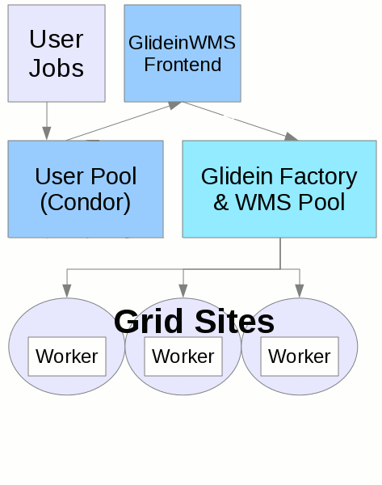

Overview
The purpose of the GlideinWMS is to provide a simple way to access the Grid resources. GlideinWMS is a Glidein Based WMS (Workload Management System) that works on top of HTCondor. Glideins are like placeholders, a mechanism by which one or more remote resources temporarily join a local HTCondor pool. The HTCondor system is used for scheduling and job control.
 The GlideinWMS is made of several services (In animation to the right, you can see this process with green circles representing jobs, black circles as glideins and gray as resources in HTCondor).
- Users submit jobs to the User Pool HTCondor schedd process.
- The GlideinWMS Frontend polls the user pool to make sure that there are enough glideins (workers) to satisfy user jobs. It submits requests to the glidein factory to submit glideins.
- The Glidein Factory and WMS Pool receives requests from the frontend(s) and submits a HTCondor startd wrapper (glidein) to entry points (grid sites).
- The grid sites receive the (glidein) jobs and start a HTCondor startd that joins the User Pool. This glidein shows up as a resource in the User Pool.
- The user jobs are matched with these resources
Current release
For release information, see the Download Page.
Frequently Asked Questions
- What can GlideinWMS be used for?
The GlideinWMS can be used to shield regular users from the Grid.
A user will submit a vanilla or standard job to a local HTCondor schedd and the GlideinWMS will make sure the job runs somewhere.
A user needs not worry about site selection or other grid technicalities. - If the GlideinWMS is HTCondor based, does this mean it can only
be used on Grid sites that use HTCondor as the
underlying batch system?
No. HTCondor is used just as a overlay WMS batch system (i.e. a user submits to a local condor_schedd).
Any grid resource can be used using GlideinWMS. - What are the advantages of using glideins?
Installing and configuring the glidein infrastructure can be daunting, but it has a lot of advantages. Once configured, the task of submitting jobs to the grid is vastly simplified. In addition, glideins allow worker nodes to process multiple jobs. If a job finishes and there are still unmatched jobs in the user pool, the glidein will continue servicing the user pool.
GlideinWMS also solves many problems with the grid. If a site is malfunctioning, this will only affect the glidein factory (see animation). User jobs will not be lost to the broken site. Other similar problems will be shielded from users. - How do I submit jobs?
See our user tutorials with example of job submissions for VO Frontend. This example assumes you have a working GlideinWMS installation. - Which are the components of the Glidein Workflow Management System?
The main components of the system, shown also in the picture above are:- User Pool (User Collector, Glidein Pool Collector): a HTCondor pool (at least collector and negotiator daemons) where all the user jobs are matched to glideins and managed. Jobs are queued in an separate service (User schedd)
- User Schedd (User submit node, scheduler node): a HTCondor system, consisting only of the schedd daemon, used to submit and queue jobs
- WMS Pool (WMS Collector, glidein pool Collector node, GlideinWMS Collector ): a HTCondor pool (at least collector, negotiator and schedd daemons) used to manage and submit the glideins to all the resources (entries)
- GlideinWMS VO Frontend (Glidein Frontend, VO Frontend): a service that looks at the queued jobs, resources available to run them and applies VO defined policies to request glideins at desired sites (resources)
- GlideinWMS Factory (Glidein Factory): a service submitting glidein to the available resources
{kind=link}